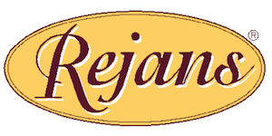

Sevgili konuklar, hoş geldiniz.
Birçoğunuzla, eminim, dostluğum çok uzun yıllara dayanıyor. Hepimizin hayatında çok özel bir yere sahip olan Rejans yıllarına... Sizlerden bizlere geçen keyif ve enerjiyle, sayısız güçlüğe göğüs gererek, Rejans'ı 80 yıla yaklaşan bir süreçte yaşadığı mekanda sürdürme mücadelemize hepiniz tanık oldunuz. Ancak tüm çabalarımız ve özverimiz; Rejans'ı tarihi mekanında yaşatmaya yetmedi.
Bugün sizinle yepyeni bir oluşumda caffe il gusto ristorante çatısı altında buluşmuş bulunuyoruz. Ancak bu buluşma, aklınızda Rejans'tan ve Rejans kültüründen vazgeçtiğimiz izlenimini uyandırmasın! Rejans, en kısa zamanda yeniden hayata geçecek. Bunca zaman beklememizin nedeni Rejans'ın tarihsel ve kültürel ağırlığını taşıyabilecek bir mekanı içimize sindirememiş olmamızdandır. Ancak arayışlarımızın en kısa zamanda sonuca ulaşacağından emin olabilirsiniz.
Rejans'ta, geleneksel yapıya ve yeme içme kültürüne çağdaş teknolojiyi ve günümüzün ağız tadına uygun lezzetleri ekleyebilmek için var gücümüzle çalıştık. Bunun karşılığını da sizlerin beğenileri doğrultusunda fazlasıyla aldık.
şimdi artık yeni sulara da yelken açmanın zamanı... çıkış noktamız yine güçlü ve geleneksel bağları sıkı örülmüş bir başka kültür, İtalyan mutfağı... Ancak İtalyan mutfağına ve caffe il gusto ristorante'de sizlere sunacaklarımıza geçmeden önce yeni mekanımızın konumuyla ilgili birkaç şey söylemek isterim.
Akaretler, tıpkı bizim yemek kültüründe yapmayı amaçladığımız gibi geleneksel dokunun bozulmadan çağdaş yenilenmenin en güzel örneklerinden biri... çevredeki iş yeri potansiyeli, caffe il gusto ristorante gibi hem hızlı, hem uzun soluklu yemeklere olanak tanıyan mekanlara ihtiyaç duyacak bir düzeyde... Ayrıca Beşiktaş, Maçka, Nişantaşı gibi yoğun insan trafiğinin yaşandığı bir güzergahta olması da bir başka çekici durum. Umuyoruz ve diliyoruz ki, yalnız bu çevrelerin yaşayanları değil, İstanbul'un birçok noktasından yeme içme tutkunları yapacaklarımızın farkına varmakta fazla gecikmeyecekler ve il gusto'yu büyük bir keyifle benimseyeceklerdir.
Caffe il gusto ristorante, özünde İtalyan mutfağından yola çıkmakla birlikte, değişik açılımlar da sunacaktır, konuklarına... Dilerseniz bir sabah kahvesi, dilerseniz iş çıkışı stres atmak için bir akşam içkisi ve arkadaş sohbeti için kendinizi atabilirsiniz il gusto'ya ...
Amacınız hızlı bir öğle yemeği ya da uzun soluklu, mükellef bir akşam yemeğiyse yine il gusto, elinizin altındaki bir can simidi olacaktır sizler için. Güler yüzlü ve deneyimli personeli, size sadece özel lezzetler sunmakla kalmayacak, aynı zamanda burada geçireceğiniz anları bir keyfe dönüştürecektir.
İtalyan mutfağını uzun uzadıya anlatmaya gerek yok. Bir Fellini filmi gibidir, İtalyan mutfağı. Her an keyifli sürprizler sunar, sunduğu lezzetlerle sizleri baştan çıkarır. Türk ağız tadına en uygun tatlardan biridir, kuşkusuz. Caffe il gusto ristorante'deki amacımız işte sizi bu doyumsuz tatlarla buluşturmaktır. Bir kafe rahatlığında ve sıcaklığında ama mükellef bir restoran özeninde ve çeşitliliğinde buluşalım istedik sizlerle.
Lafı fazla uzatmaya gerek yok. Birbirimizi tanıyoruz nasıl olsa.
Tıpkı Rejans'ta olduğu gibi, il gusto bünyesinde de beklentilerinizi boşa çıkarmayacağımızdan emin olabilirsiniz.
Hepinize tekrar hoş geldiniz diyorum ve teşekkür ediyorum.
Iletisi icin info AT rejansrestaurant.com adresine email atabilirsiniz